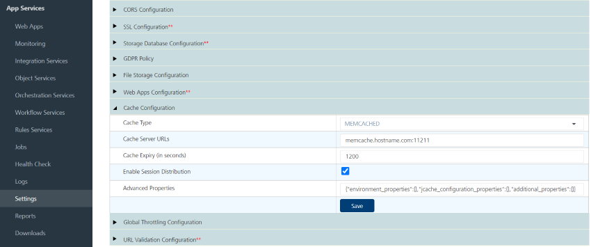
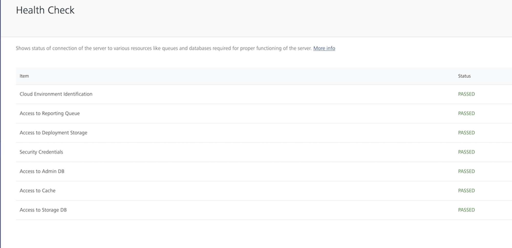

You are here: How to Add an Installer Generated Self-Signed SSL Certificate to Cacerts
Configuring Secure Sockets Layer (SSL) Certificate - Post-Installation Tasks
You can troubleshoot trusted certification issues.
Important: Apple's App Transport Security (ATS) mandates HTTPS for all communication and requires the use of TLS v1.2 or higher for all SSL certificates and load balancers.
For Apple apps to work properly and adhere to App Store guidelines, you must enable your Volt MX Foundry on-premises instance with SSL and configure your network infrastructure to use TLS version 1.2 or higher. For more information, please refer to the following: HCL Basecamp article on ATS Compliance.
After installing Volt MX Foundry on HTTPS, import your SSL certificate (for example, domain.subdomain.crt) into your Volt MX Foundry Installer's JRE trusted certificate authority (CA) certificates file - for example, <INSTALL_DIR>/jre/lib/security/cacerts
If your SSL certificate is not configured, the system displays an error - "peer not authenticated". For details, refer to Troubleshoot with SSL Certificate Issues.
To enable communication between Volt MX Foundry Console and other products such as Volt MX Foundry Integration Services, and Volt MX Foundry Engagement Services, follow these steps:
- import each product's certificate (VoltMX Foundry Integration Services, and Volt MX Foundry Engagement Services) into the Volt MX Foundry console (for example,
<INSTALL_DIR>/jre/lib/security/cacerts). - import console cert into the product boxes cacerts such as Volt MX Foundry Integration, Volt MX Foundry Engagement Services, and Volt MX Foundry Management.
How to Add an Installer Generated Self-Signed SSL Certificate to Cacerts
To add an installer generated self-signed SSL certificate to cacerts, follow these steps:
-
From your Volt MX Foundry installed system, open the Linux terminal, and run the following command to generate an
intermediate.crtfile from the keystore:/jre/bin/keytool -export -alias " /intermediate.crt -keystore /keystore.jks -storepass Based on the hostname and keystore password provided at the SSL Certificate window, the preceding command exports the required certificate from the source keystore with the given name - for example,
intermediate.crt. -
Run the following command to import the
intermediate.crtcertificate file into your Volt MX Foundry Installer's JRE trusted certificate authority (CA) certificates file:/jre/bin/keytool -import -noprompt -trustcacerts -alias " /intermediate.crt -keystore /jre/lib/security/cacerts -storepass changeit
How to Add an Existing SSL Certificate to Cacerts
If Java does not identify a certificate issuer by default, you need to import an SSL into your cacerts.
To add an existing SSL certificate to cacerts, follow these steps:
Use the following steps to import your existing certificate to cacerts with the proper value of alias, keystore location and keystore password.
-
From your Volt MX Foundry installed system, open the Linux terminal, and run the following command to add an
intermediate.crtfile from the keystore:/jre/bin/keytool -export -alias " /intermediate.crt -keystore -
Run the below command to import the
intermediate.crtcertificate file into your Volt MX Foundry Installer's JRE trusted certificate authority (CA) certificates file:/jre/bin/keytool -import -noprompt -trustcacerts -alias " /intermediate.crt -keystore /jre/lib/security/cacerts -storepass changeit
JDK Version Compatibility
In case if you upgrade your JDK version in your middleware server, to enable JDK version compatibility, make the appropriate changes in an app server's middleware.properties file located in your middleware server installation folder.
For example: When you upgrade JDK V 1.6 to JDK V 1.7 (vice-versa), you can still run your middleware server. Volt MX Foundry's run-time apps cannot be accessed. If you try to access any apps at runtime, the system throws an error message due to JDK version incompatibility.
- In your middleware server installation folder, open the
middleware.propertiesfile located at the below path:- for JBoss:
<installer folder>\middleware_home\middleware\middleware-bootconfig - for Tomcat:
<installer folder>\middleware_home\middleware\middleware-bootconfig
- for JBoss:
-
Make the following changes in the
middleware.propertiesfile.ssl.trustStore=/<java_home>/jre/lib/security/cacertsssl.keyStore=/<java_home>/jre/lib/security/cacerts
How to Configure Memcached for Integration Services
-
For Foundry version 7.3 or above, you can configure the memcache from Admin console.
To configure memcache in Foundry 7.3 or above versions, follow these steps:
- Open Admin console (http/https://
: /admin). -
In the left pane, go to the Settings tab.

-
Under the Runtime Configuration tab, expand the Memcache Configuration key.
- In the Memcache Cluster field, provide your memcache hostname/IP and port details separated with a colon. For example,
: - Save the changes.
- Open Admin console (http/https://
-
For below Foundry 7.3, you can configure the memcache using queries on voltmxadmindb.
To configure memcache in below Foundry 7.3, follow these steps:
Since UI is not available in version below 7.3, you must update the property value in the server_configuration table of VOLTMXADMINDB database.
Note: Name of the VOLTMXADMINDB depends on the suffix and prefix provided, which you provided during the installation.
-
Execute the following steps:
UPDATE < VOLTMXADMINDB >.server_configuration set prop_value = '< memcache_hostname >’:’< memcache_port >’' , created_date = CURRENT_TIMESTAMP , updated_date = CURRENT_TIMESTAMP WHERE prop_name = 'memcache.cluster';Verification: To verify whether the memcache configuration is successfully done, go to the Health Check page and look for Access to Cache entry.
Note: It may take up to 5 minutes for the healthcheck to reflect the cache status. If you are still unable to find the particular entry in the Health Check page, try clearing the healthcheck cache using the following URL:
https://
: /admin/healthcheck?output=json 
-
Configure Deployment of mbaasportal.war File for Multi-Node
Once Volt MX Foundry installation succeeds, the Volt MX Foundry Console will not be displayed as the enable-welcome-root value is set true in thedomain.xml file.
To configure mbaasportal.war, follow these steps:
- In the master node, open the
domain.xmlfile fromJBOSSDIR/domain/configuration, and search for enable-welcome-root="true." - Replace enable-welcome-root="true" with enable-welcome-root="false."
Remote Installation Pre-requisites
After you have installed Volt MX Foundry, you must retain the Installation folder for upgrades. While upgrading, the Volt MX Foundry installer requires the installvariables.properties file under the <USER_INSTALL_DIR>/_VoltMX Foundry_installation folder.
Installing Volt MX Foundry Remotely
You can install Volt MX Foundry remotely on the following supported application servers:
- JBoss Multi-node
- JBoss Standalone pre-existing
How to Turn off the Send usage data anonymously feature
Allows HCL to collect product usage information to make your Volt MX Foundry experience better.
- Go to the Accounts database configured for the Volt MX Foundry installation.
- Open the account_configurations table.
- Find the row entry in the name column with name as
analyticsEnabled. -
Modify it to true/false.

-
Refresh Volt MX Foundry Console.
You should be able to figure out if analytics data that is sent/out by trying to check in the Network tab in the Browser Developer Tools.
Configuring Datasource for performance improvements for JBoss pre-existing and Domain Mode
While using pre-configured JBoss or JBoss in Domain Mode, add the following snippet to the datasource to improve the performance.
<pool>
<min-pool-size>10</min-pool-size>
<max-pool-size>30</max-pool-size>
<flush-strategy>IdleConnections</flush-strategy>
</pool>
Note: For the bundled version, the installer will add the default size to the datasources.
Health Check URL
The following is the Component Health Check URL if the initial setup is success:
<http/https>://<Domainname>:<port>/mfconsole/health_check/all
{"workspace":"passed","accounts":"passed","portal":"passed"}
<http/https>://<Domainname>:<port>/authService/v1/manage/checkhealth
Passed
<http/https>://<Domainname>:<port>/admin/healthcheck?output=json
{"healthCheck":"PASSED","healthDetail":
{"Access to Reporting Queue":"PASSED","Access to Admin DB":"PASSED","Access to Reports DB":"PASSED","Access to Storage DB":"PASSED"}
,"version":"V8 SP2 FP1 HF1"}
<http/https>://<Domainname>:<port>/services/healthcheck?output=json
{"healthDetail":
{"appID":"services","Access to Reporting Queue":"PASSED","Access to Admin DB":"PASSED","Access to Storage DB":"PASSED"}
,"applicationHealthCheck":"PASSED","version":{"Middleware Version":"VoltMXFoundryInstaller-GA-8.2.1.1"}}
<http/https>://<Domainname>:<port>/vpns/service/healthcheck/json
{"healthCheck":"PASSED","healthDetail":
{"Quartz jobs":"PASSED","Access to Database Server":"PASSED","Security Credentials":"PASSED"}
,"version":"8.2.1.1_GA"}
Steps to enable SAPJCo
The installer provides the following artifacts:
- SapJCoDestinationProvider.jar
- Module.xml (for JBoss)
You can download the other artifacts libsapjco3.so (for Linux) or sapjco3.dll (for Windows), and sapjco3.jar from https://websmp204.sap-ag.de/connectors.
The SapJCoDestinationProvider.jar can be located at:
<USER_INSTALL_DIR>/Integration/sapjco/main- for JBoss
The Module.xml can be located at:
<USER_INSTALL_DIR>/Integration/sapjco/main
Steps for Tomcat
-
Navigate to
<USER_INSTALL_DIR>/tomcat/lib, and add the following files:- sapjco3.jar
- libsapjco3.so/sapjco3.dll
Note: The SapJCoDestinationProvider.jar is already placed in the
<USER_INSTALL_DIR>/tomcat/libby the installer. -
Restart the server
Steps for JBoss
For Windows: Place the sapjco3.dll in the jboss/bin folder or C:/Users/
For Linux: Place the libsapjco3.so in the /usr/bin folder or any location on the machine and append the path to the $LD_LIBRARY_PATH variable
JBoss - Standalone (Bundled)
- Navigate to
<USER_INSTALL_DIR>/jboss/modules/org/sapjco/main, and add the following files:- sapjco3.jar
- SapJCoDestinationProvider.jar
- Navigate to
<USER_INSTALL_DIR>/jboss/modules/org/sapjco/main/- In
module.xml, under thetag add <resource-root path="sapjco3.jar"/>. - In
standalone-full.xml, under thetag add <module name="org.sapjco" slot="main"/>.
- In
JBoss - Standalone(Pre-configured)/Domain mode
- Navigate to
<JBOSS_DIR>/modules/org/sapjco/main, and add the following files:- sapjco3.jar
- SapJCoDestinationProvider.jar
- Navigate to
<JBOSS_DIR>/modules/org/sapjco/main.- In
module.xml, under thetag add <resource-root path="sapjco3.jar"/>. - In
standalone.xmlordomain.xml, in the subsystem add<subsystem xmlns="urn:jboss:domain:ee:4.0">. Add the following tag:
- In
<global-modules>
<module name="org.sapjco" slot="main"/>
</global-modules>